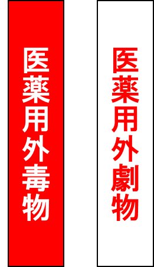

毒物及び劇物取締法
この法律は、毒物及び劇物について、保健衛生上の見地から必要な取締を行うことを目的とする。(法第一条)
毒物、劇物、特定毒物の対象物質
毒物、劇物及び特定毒物とは、次に掲げるものをいう。(法第二条)
毒物：別表第一及び指定令第一条に掲げるものであって医薬品及び医薬部外品以外のもの。
劇物：別表第二及び指定令第二条に掲げるものであって医薬品及び医薬部外品以外のもの。
特定毒物：毒物であって別表第三及び指定令第三条に掲げるもの。
別表第一、別表第二、別表第三については、毒物、劇物、特定毒物について国立医薬品食品衛生研究所のページより確認できます。
毒劇物の取り扱い
- 毒劇物の盗難・紛失・漏えい等を防ぐのに必要な措置を講じなければなりません。
- 毒劇物を保管する場合は、その他の薬品とは分けて、施錠のできる専用の棚等に保管して下さい。また、毒劇物を保管する場所には下の写真のように、「医薬用外」の文字及び毒物については赤地に白色で「毒物」、劇物については白地に赤色で「劇物」の文字を表示しなければなりません。
- 誤飲防止のため、毒劇物を飲食物の容器に保管することは禁止されています。
- 紛失・盗難防止のため、毒劇物を使用する際は管理簿等で使用量や残量を管理する必要があります。本学ではIASOシステムで持出・返却登録を行うことで管理簿への記録としています。
 |
 |
毒物・劇物用保管庫 |
毒物・劇物表示 |